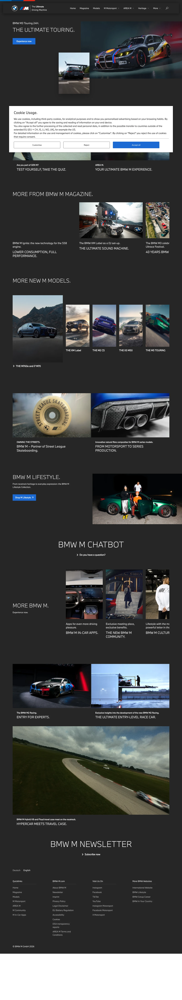

BMW M 主题
BMW M 的 Design.md 主题展示，围绕SaaS 产品、开发工具、浅色界面组织页面。
Motorsport automotive. Pure black canvas, M tricolor stripe accents, full-bleed photography.
SaaS 产品开发工具浅色界面

来源
- 来源
- getdesign.md
- 镜像
- github:VoltAgent/awesome-design-md
- 网站
- https://bmw-m.com/
- 详情
- https://getdesign.md/bmw-m/design-md
色板
#000000: #000000#1a1a1a: #1a1a1a#ffffff: #ffffff#bbbbbb: #bbbbbb#e6e6e6: #e6e6e6#7e7e7e: #7e7e7e#3c3c3c: #3c3c3c#262626: #262626#0d0d0d: #0d0d0d#0066b1: #0066b1#1c69d4: #1c69d4#e22718: #e22718
字体
display: BMWTypeNextLatinbody: BMWTypeNextLatin Lightmono: ui-monospacehints: BMWTypeNextLatin,BMWTypeNextLatin Light,ui-monospace,Inter,Roboto
圆角
control: 0pxcard: 4pxpreview: 4pxpill: 9999pxsource: design-md
间距
xxs: 4pxxs: 8pxsm: 12pxmd: 16pxlg: 24pxxl: 40pxxxl: 64pxsection: 96pxsource: design-md
使用建议
建议
- 建议：Anchor every page with full-bleed automotive photography. The cars are the brand voltage; chrome backs off。
- 建议：Use UPPERCASE display headlines in {typography.display-xl} or {typography.display-lg}. Sentence-case display reads as off-brand。
- 建议：Pair heavy display (700) with light body (300). The weight contrast is the editorial signature。
- 建议：Reserve the M tricolor stripe for brand-identity moments — wordmark accents, motorsport chrome, model badges. Never as a button fill or surface。
- 建议：Use {rounded.none} (0px) by default. Reserve {rounded.full} for circular icon buttons only。
避免
- 避免：introduce a brand color outside the M tricolor ({colors.m-blue-light} / {colors.m-blue-dark} / {colors.m-red}) and the heritage {colors.bmw-blue}。
- 避免：bold body type. Body stays at 300 (Light) — bumping to 400 or 500 makes the page feel marketing-bombastic instead of European-engineered。
- 避免：use rounded buttons. The rectangular silhouette IS the brand. Rounded corners read as consumer-tech, not motorsport。
- 避免：put gradient backdrops behind hero type. The hero IS the photography — the page floor stays pure black, and the photo provides the depth。
- 避免：repeat the same surface mode in two consecutive bands. Rhythm: photo band → spec table → photo band → magazine grid → photo band. Two text-only bands in a row read as a corporate site。
查看 DESIGN.md